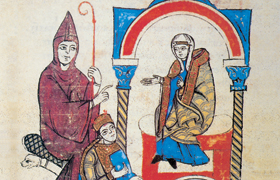

Lezione 7  Sacro romano impero
Sacro romano impero

Vescovi-Conti: Dalla fine del IX secolo, e per tutto il X, le incursioni degli ungari, dei normanni e dei saraceni facilitarono in Europa la disgregazione di grandi unità territoriali e l’emergere di poteri locali come le signorie, incentrate sui castelli, più facili da difendere.
Il Sacro romano impero, restaurato verso la fine del X secolo da Ottone I di Sassonia, ebbe il suo centro in Germania, e da subito i suoi imperatori si trovarono a dover affrontare il problema di governare un vasto territorio in cui i poteri locali erano fortissimi.
Nel corso dell’XI secolo conti e marchesi – i signori feudali – acquisirono potere, poiché le loro cariche divennero ereditarie. Sentirono sempre meno il vincolo con il potere centrale e il richiamo dell’unità imperiale: sempre di più ognuno pensava per sé e agiva in autonomia.
Per contrastare il potere dei conti e dell’aristocrazia, fin dall’inizio del X secolo con Ottone I di Sassonia, gli imperatori concessero poteri politici e feudi ai vescovi e agli uomini di Chiesa, poiché questi non potevano trasmettere ereditariamente né i feudi, né il loro ufficio ecclesiastico: alla loro morte ogni cosa tornava al sovrano.
Si formò così la figura del vescovo-conte, che adempiva incarichi religiosi, ma anche politico-amministrativi.
Investitura: nel Medioevo si intende con questo termine l’attribuzione da parte dell’autorità politica (ad es. l’imperatore) di funzioni riguardanti l’amministrazione pubblica.
Per esempio: chi riceveva l’investitura da parte del sovrano doveva occuparsi della riscossione delle tasse, aveva il diritto-dovere di radunare cavalieri armati per formare gli eserciti, gestiva le controversie, si occupava della fortificazione delle città.
Oltre alle funzioni politiche l’imperatore, o chi per lui, assegnava con l’investitura anche beni fondiari e feudi, che garantivano condizioni di vita ed economiche adeguate agli incarichi.
L’investitura riguardò inizialmente i conti, poi sempre più spesso i vescovi e gli uomini di Chiesa, fatto, questo, che provocò inevitabili ingerenze da parte delle autorità politiche in quelle che erano nomine ecclesiastiche.
Quando nell’XI secolo Gregorio VII decretò la proibizione delle investiture, per i vescovi e gli uomini di Chiesa si scatenò un duro conflitto tra papato e imperatore, che finì per rivoluzionarne i rapporti.
Scomunica: condanna ecclesiastica che comporta l’esclusione della persona colpita dalla comunione dei fedeli e dalla possibilità di ricevere e di impartire i sacramenti (DISC, Dizionario Italiano Sabatini Coletti, Giunti, Firenze, 1997).
All’epoca della lotta per le investiture scomunicare un imperatore significava togliergli ogni potere, poiché i sudditi non dovevano obbedienza a un sovrano scomunicato.